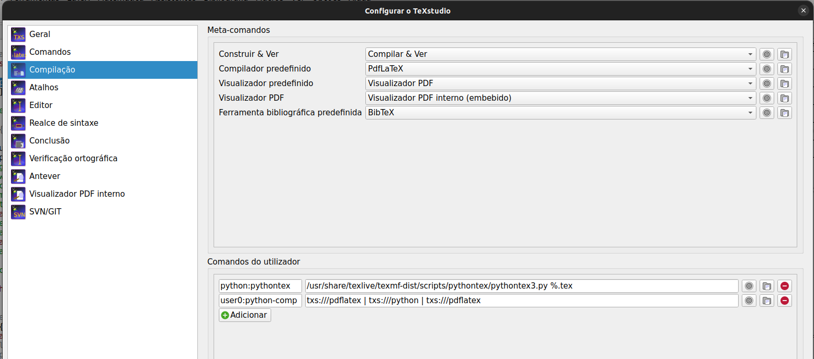

Como usar Python no LaTeX
Configurando e compilando
Recentemente me perguntei se poderia usar o python para gerar gabarito de provas. Eis que descobri o pythontex! Uma rápida pesquisa no google me levou ao site: A very simple introduction to using Python in Latex
Ali aprendi dicas valiosas e em poucos minutos consegui fazer o que queria. Mas tive algumas dificuldades em tornar mais prática a compilação no linux usando o TexStudio. Depois de mais pesquisas e quebrar um pouco a cabeça consegui um resultado que esta satisfatório para mim. Abaixo descrevo este processo.
Para usar o python no latex usamos o pacote \usepackage{pythontex}. No site citado acima ele dá vário exemplos para testar. Ele também ensina que para gerar o pdf com os códigos em python precisa compilar o latex no terminal da seguitne forma:
pdflatex foo.tex
/usr/share/texlive/texmf-dist/scripts/pythontex/pythontex3.py
foo.tex
Entretanto isso é muito chato, pois tem que ficar rodando 3 vezes no terminal toda hora que queremos ver o resultado. Para otimizar isso, precisamos acrescentar linhas de compilação no TexStudio.
Primeiramente, deve-se ter o Anaconda instalado no computador. E precisa abrir o TexStudio via terminal.
No TexStudio basta ir em: configurações-> compilação comandos do utilizador e acrescentar novos comandos como abaixo:

Daí, para compilar o arquivo é só ir em Ferramentas -> Utilizador e escolher o python-comp
Para facilitar ainda mais eu criei um atalho na tecla F2 para este comando.
Gerando dois arquvivos, prova e gabarito, simultaneamente
Preparo minhas provas usando pacote exam. Eu costumava gerar o gabarito usando no preâmbulo \documentclass[answers]{exam}. Depois do gabarito pronto, para gerar a prova e esconder as soluções eu trocava o preâmbulo para \documentclass[noanswers]{exam}.
O inconveniente disso é que sempre que você quer o gabarito ou a prova, precisa modificar o preâmbulo e compilar novamente. Além disso, você sempre fica com um arquivo ou outro. Para se ter os dois arquivos, uma solução seria gerar dois arquivos com preâmbulos diferentes, mas o incoveniente disso é manter as atualizações de um para o outro.
Buscando por soluções na internet para poder gerar os dois arquivos simultaneamente, encontrei a seguinte solução.
Cria-se o arquivo do gabarito com um nome que contenha a palavara gabarito, por exemplo p1-gabarito.tex. No seu preâmbulo incluindo-se o seguinte:
\usepackage{currfile}
\usepackage{xstring}
\IfSubStr*{\currfilename}{gabarito}{ \printanswers }{ \noprintanswers }`Quando compilar o arquivo, o \(\LaTeX\) vai verificar se o nome do arquivo contém a palavra gabarito. Em caso afirmativo ele vai compilar com o comando \printanswers, caso contrário, ele vai compilar com \noprintanswers.
Agora basta duplicar o arquivo e renomear sem a palavra gabarito no nome, por exemplo, p1.tex ou p1-provas.tex. E então compilar este arquivo também.
A fim de automatizar este processo, depois de criar o arquivo gabarito, basta criar um script no linux da seguinte forma:
Cria-se um arquivo .sh com o seguinte conteúdo:
#!/bin/bash
cp p1-gabarito.tex p1-prova.tex
latexmk
/usr/share/texlive/texmf-dist/scripts/pythontex/pythontex3.py p1-gabarito.tex
/usr/share/texlive/texmf-dist/scripts/pythontex/pythontex3.py p1-prova.tex
latexmk
Então basta rodar este script no terminal. Ele vai copiar o gabarito e renomeá-lo como p1-prova.tex. Depois ele vai rodar o latexmk e o python tanto para o gabarito quanto para o arquivo prova. Isso vai gerar dois pdf, um com o gabarito, contendo às respostas e outro com a prova sem as respostas.
Aqui está um exemplo de uma prova que elaborei e os pdfs gerados
Arquivo .tex e figura para o cabeçalho: 2023-2-p1-M1-c3-gabarito.tex, braso-cor.png
Pdfs gerados pelo script: 2023-2-p1-M1-c3-gabarito.pdf, 2023-2-p1-M1-c3-prova.pdf
Script: compilar.sh
{kind=link}